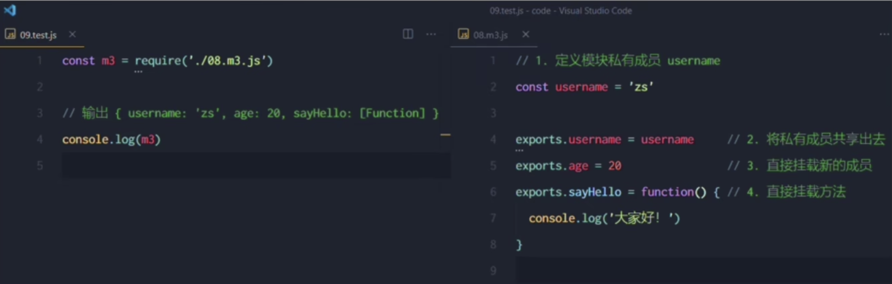
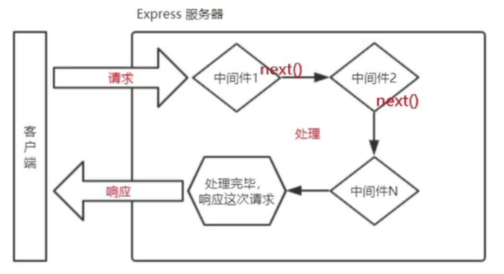
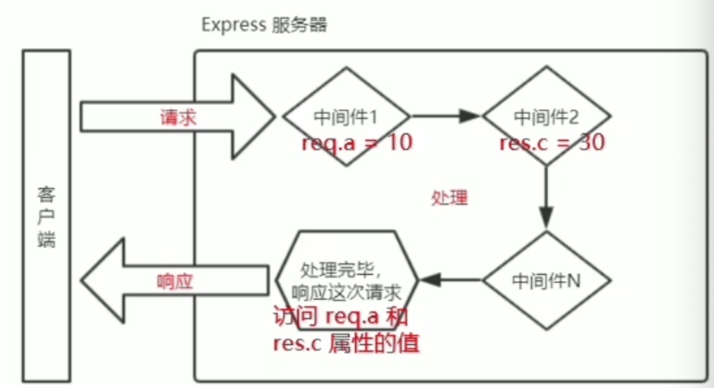
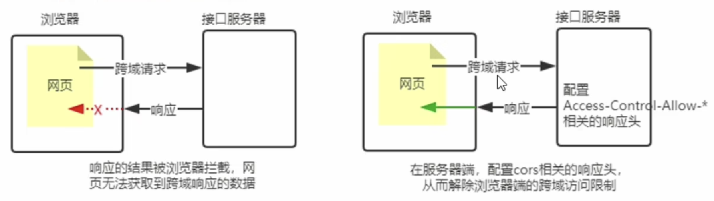
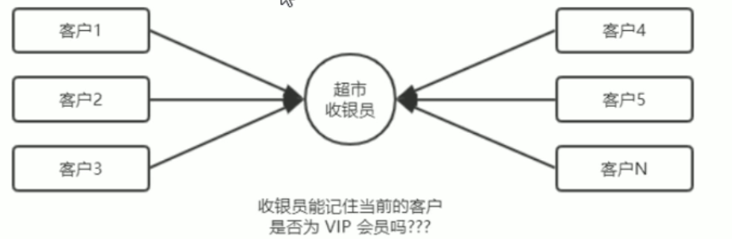
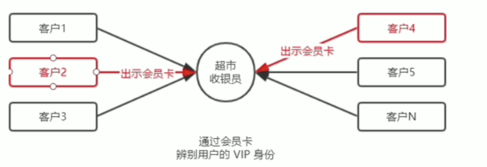
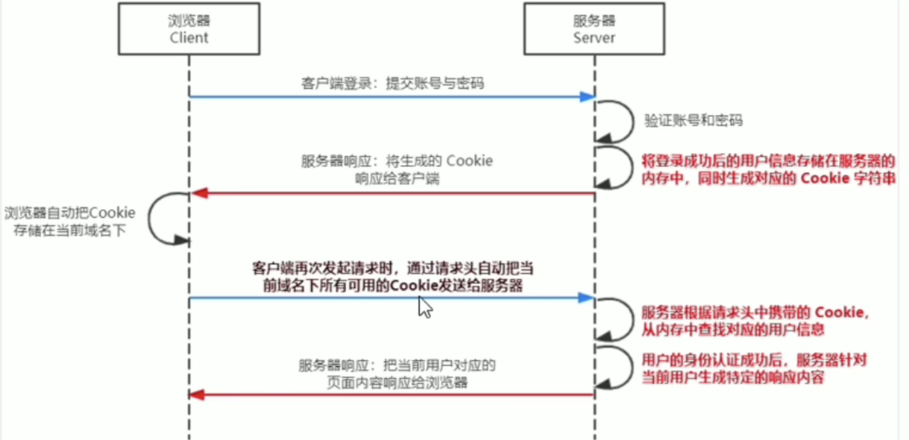

介绍Node.js
浏览器是JavaScript的前端运行环境
Node.js是JavaScript的后端运行环境
在Node.js中无法调用DOM和BOM等浏览器内置API
fs文件系统模块
fs.readFile()
使用fs.readFile()方法，可以读取指定文件中的内容，语法格式如下：
fs.readFile(path, [options], callback)
参数：
path：必选参数，字符串，表示文件路径options：可选参数，表示以什么编码格式来读取文件callback：必选参数，文件读取完成后，通过回调函数拿到读取的结果回调函数的参数：
err：读取成功的值为null ， 读取失败后的值为一个错误对象dataStr：读取成功的值为文件内容，读取失败后的值为undefined
示例:
const fs = require('fs')fs.readFile('./untitled.py', 'utf-8', function (err, dataStr) { if (err) { return console.log('文件读取失败' + err); } console.log('文件读取成功\n' + dataStr);})fs.writeFile()
使用fs.writeFile()方法，可以指定的文件中写入内容，语法格式如下：
fs.writeFile(file, data, [options], callback)
参数：
file：必选参数，需要指定一个文件路径的字符串，表示文件的存放路径
data：必选参数，表示要写入的内容
可选参数：表示以什么格式写入文件内容，默认值是utf8
必选参数：文件写入后的回调函数
Demo:
const fs = require('fs')fs.writeFile('./untitled.py', 'hhhhhhhhhh', function (err) { if (err) { return console.log('文件写入失败' + err); } console.log('文件写入成功');})fs模块路径动态拼接的问题
介绍：在使用fs模块操作文件时，如果提供的操作路径是以./ 或 ../ 开头的相对路径时，很容易出现路径动态拼接的错误的问题。
原因：代码在运行的时候，会以执行node命令时所处在的目录，动态拼接出被操作文件的完整路径。
解决方案：在使用fs模块操作文件时，直接提供完整的路径，不要提供./ 或 ../ 开头的相对路径，从而防止路径动态拼接的问题。
使用__dirname可以直接得到当前文件的绝对路径

path路径模块
介绍
path模块是Node.js官方提供的，用来处理路径的模块，它提供了以系列的方法和属性，用来满足用户对路径的处理需求。
例如：
path.join()：用来将多个路径片段拼接成一个完整的路径字符串。
path.basename()：用来从路径字符串中，将文件名解析出来。
如果在JavaScript代码中使用path模块来处理路径，则需要使用如下的方式先导入它：
const path = require('path')path.join()
const path = require('path')const pathStr = path.join('/a', '/b', '/c')console.log(pathStr); // 打印/a/b/c
// 使用场景const pathStr2 = path.join(__dirname, '/2.path.join().js')console.log(pathStr2); // /Users/shenguangmin/资料/代码文件/Node.js/2.path.join().js获取路径中的文件名
path.basename(path[,ext])
参数：
path<string>必选参数，表示一个路径的字符串ext<string>可选参数，表示去掉文件扩展名返回：
<string>表示路径中的最后一部分
Demo:
const path = require('path')const pathStr = path.join(__dirname, '2.path.join().js')console.log(pathStr); // /Users/shenguangmin/资料/代码文件/Node.js/2.path.join().js
console.log(path.basename(pathStr)); // 2.path.join().jsconsole.log(path.basename(pathStr, '.js')); // 2.path.join()获取路径中的文件扩展名
path.extname(path)
参数：
path<string>：必须参数，表示需要获取的路径返回：文件的扩展名
http模块
什么是http模块
在网络节点中，负责消费资源的电脑叫做客户端，负责对外提供网络资源的电脑叫做服务器
http模块是Node.js官方提供的、用来创建Web服务器的模块，通过http模块提供http.createServer()方法，就能方便的把一台普通的电脑变成一台Web服务器，从而对外提供Web资源服务。
如果要使用http模块创建Web服务器，则需要先导入它
const http = require('http')服务器相关的概念
尽管 IP 地址能够唯一的标记网络上的计算机，但IP地址是一长串数字，不直观，而且不便于记忆，于是人们又发明了另一套字符型的地址方案，即所谓的域名 (Domain Name) 地址。
IP地址和域名是一一对应的关系，这份对应关系存放在一种叫做域名服务器(DNS, Domain name server)的电脑中。使用者只需通过好记的域名访问对应的服务器即可，对应的转换工作由域名服务器实现。因此，域名服务器就是提供 IP 地址和域名之间的转换服务的服务器。
注意：
单纯使用 IP 地址，互联网中的电脑也能够正常工作。但是有了域名的加持，能让互联网的世界变得更加方便。
在开发测试期间，127.0.0.1对应的域名是 localhost， 它们都代表我们自己的这台电脑，在使用效果上没有任何区别。
端口号
计算机中的端口号，就好像是现实生活中的门牌号一样。通过门牌号，外卖小哥可以在整栋大楼众多的房间中，准确把外卖送到你的手中。
同样的道理，在一台电脑中，可以运行成百上千个web 服务。每个web 服务都对应一个唯一的端口号。客户端发送过来的网络请求，通过端口号，可以被准确地交给对应的web 服务进行处理。
注意：
每个端口号不能同时被多个 web 服务占用。
在实际应用中，URL 中的80 端口可以被省略。
创建最基本的web服务器
创建web服务器的基本步骤：
导入http模块
创建web服务器实例
为服务器实例绑定request事件，监听客户端的请求
启动服务器
const http = require('http')const server = http.createServer()// 绑定request事件server.on('request', (req, res) => { console.log('访问了服务器'); console.log(`访问的地址：${req.url}`); //req.url是客户端请求的url地址 console.log(`请求的方式：${req.method}`); //req.method是客户端请求的method类型
//向客户端发送指定的内容，并结束这次请求的处理过程 res.end('hello')})
// 启动服务器server.listen(80, () => { console.log('服务器已启动...');})事件回调函数中的参数
req：客户端相关的数据或属性req.url：端口号之后的urlreq.method：客户请求的方式
res：服务器相关的数据或属性//向客户端发送指定的内容，并结束这次请求的处理过程res.end('hello')
注意：如果html文件中引入了其他的文件(css、js)，那么浏览器会自动向那些文件发起请求，并且触发回调函数
解决中文乱码问题
当调用end()方法向客户端发送中文内容的时候，会出现乱码问题，需要手动设置内容的编码格式
xxxxxxxxxxserver.on('request', (req, res) => { console.log('访问了服务器');
// 通过res.setHeader()方法设置Content-Type 响应头，解决中文乱码问题 res.setHeader("Content-Type", "text/html; charset=utf-8")
//向客户端发送指定的内容，并结束这次请求的处理过程 res.end('hello你好')})模块
模块作用域
和函数作用域类似，在自定义模块中定义的变量、方法等成员，只能在当前模块内被访问，这种模块级别的访问限制，叫做模块作用域
向外共享模块作用域中的成员
module对象在每个.js自定义模块中都有一个module对象，它里面存储了和当前模块有关的信息
module.exports对象在自定义模块中，可以使用
module.exports对象，将模块内的成员共享出去，供外界使用，外界用require()方法导入自定义模块时，得到的就是module.exports所指向的对象exports对象由于
module.exports单词写起来比较复杂，为了简化向外共享成员的代码，Node提供了exports对象，默认情况下exports和module.exports指向同一个对象。最终向外提供的对象以module.exports指向的对象为准
npm
如果想在项目中安装指定名称的包，需要运行如下的命令：
xxxxxxxxxxnpm install 包的完整名称// 简写形式npm i 包的完整名称初次装包完成后，在项目文件夹下多一个叫做
node_modules的文件夹和package-lock.json的配置文件。
node_modules文件夹用来存放所有已安装到项目中的包。require()导入第三方包时，就是从这个目录中查找并加载包。package-lock.json文件用来记录node_modules目录下的每一个包的下载信息，例如包的名字、版本号、下载地址等。
安装指定版本的包，在包名的后面加一个@符即可指定版本
xxxxxxxxxxnpm i moment@2.22.2包的语义化版本规范
包的版本号是以“点分十进制”形式进行定义的，总共有三位数字，例如2.24.0
第一位数字表示：大版本
第二位数字表示：功能版本
第三位数字表示：Bug修复版本
版本号提升的规则：只要前面的版本号增长了，则后面的版本号归零
包管理配置文件
一个项目中的node_modules文件体积过于庞大，所以在上传github时会剔除node_modules文件，通过package.json文件来记录项目中使用的包，其他人可通过这个配置文件自行的去下载所需要的包。
快速创建一个
package.json配置文件npm包管理工具提供了一个快捷命令，可以在执行命令时所处在的目录中，快速创建
package.json这个包管理配置文件xxxxxxxxxxnpm init -y注意：运行npm install 命令安装包的时候，npm包管理工具会自动把包的名称和版本号，记录到
package.json中dependencies节点package.json文件中，有一个dependencies节点，专门用来记录你使用npm install命令安装了哪些包。一次性安装所有的依赖包
npm install或npm i卸载包
npm uninstall 包名命令，来卸载指定的包devDependencies节点如果某些包只在项目开发阶段会用到，在项目上线之后不会用到，则建议把这些包记录到
devDependencies节点中，与之对应的，如果某些包在开发和项目上线之后都需要用到，则建议把这些包记录到dependencies节点中。xxxxxxxxxx// 安装指定的包，并记录到 devDependencies节点中npm i 包名 -D
i5ting_toc
I5ting_toc是一个可以把md文档转换为html页面的小工具，使用步骤如下：
xxxxxxxxxx// 将 itting_toc 安装为全局包-gnpm install -g i5ting_toc// 调用i5ting_toc，轻松实现md转html的功能i5ting_toc -f 要转换的md文件路径Express 模块
介绍：express模块对内置模块http进行了封装，开发效率更快
创建基本的Web服务器
xxxxxxxxxx// 1. 导入 expressconst express = require('express')// 2. 创建 web 服务器const app = express()// 3. 调用 app.listen(端口号，启动成功后的回调函数) 启动服务器app.listen(80, () => { console.log('服务器开启于http://127.0.0.1...');})监听GET请求
通过
app.get()方法，可以监听客户端的GET请求，具体的语法格式如下：
xxxxxxxxxxapp.get('请求的URL', function(req, res){})// 参数1: 客户端请求的URL地址// 参数2: 请求对应的处理函数// req: 请求对象（包含了与请求相关的属性与方法）// res: 请求对象（包含了与请求相关的属性与方法）通过
app.post()方法，可以监听客户端的POST请求，具体的语法格式如下：
xxxxxxxxxxapp.post('请求的URL', function(req, res){})// 参数1: 客户端请求的URL地址// 参数2: 请求对应的处理函数// req: 请求对象（包含了与请求相关的属性与方法）// res: 请求对象（包含了与请求相关的属性与方法）通过
res.send()方法，可以把处理好的内容发送给客户端：
xxxxxxxxxxapp.get('请求的URL', function(req, res){ res.send('你好啊')})通过
req.query对象，可以访问客户端通过查询字符串的形式发送到服务器的参数：
xxxxxxxxxxapp.get('/', (req, res)=>{ // req.query 默认是一个空对象 // 客户端使用?name=zs&age=20 这种查询字符串形式，发送到服务器的参数 // 可以通过req.query 对象访问到，例如： // req.query.name req.query.age console.log(req.query)})通过
req.params对象，可以访问到URL中，通过:匹配到的动态参数：
xxxxxxxxxxapp.get('/user/:id', (req, res)=>{ // req.params 默认是一个空对象 // 里面存着通过 : 动态匹配到的参数值 console.log(req.params)})托管静态资源
Express提供了一个非常好用的函数，叫做express.static()，通过它，我们可以非常方便的创建一个静态资源服务器，例如，通过如下代码就可以将public目录下的图片、CSS文件、javascript文件对外开放访问了：
xxxxxxxxxxapp.use(express.static('文件名'))现在，你就可以访问public目录中的所有文件了：
http://127.0.0.1/css/style.css
注意：
express在指定的静态目录中查找文件，并对外提供资源的访问路径，因此，存放静态文件的目录名不会出现在URL中
挂载路径前缀
如果希望在托管的静态资源访问路径之前挂在路径前缀，则可以使用如下的方式：
xxxxxxxxxxapp.use('/public', express.static('文件名'))现在，你就可以通过带有/pubulic前缀地址来访问public目录中的所有文件了：
http://127.0.0.1/public/images/bg.js
http://127.0.0.1/public/css/style.css
http://127.0.0.1/public/js/login.js
nodemon工具
当基于Node.js编写一个网站应用的时候，传统的方式，是运行node app.js命令，来启动项目，这样做的坏处是代码被修改之后，需要手动的重启项目。
现在，我们可以将node命令替换成nodemon命令，使用nodemon app.js 来启动项目，这样做的好处是：代码被修改后会被nodemon监听到，从而实现自动重启项目的效果。
xxxxxxxxxxnode app.js// 将上面的终端命令，替换为下面的终端命令，即可实现自动重启项目的效果nodemon app.jsExpress 路由
在Express中，路由指的是客户端的请求与服务器处理函数之间的映射关系。
Exrpess中的路由分成3部分组成，分别是请求的类型、请求的URL、处理函数。
xxxxxxxxxxapp.method(path,handler)// 参数：// method：请求的类型，GET或者POST// path：请求的URL// handler：处理函数中间件
next函数的作用
next()函数是实现多个中间件连续调用的关键，他表示把流转关系转交给下一个中间件或路由。

定义中间件函数
可以通过如下的方式，定义一个最简单的中间件函数
xxxxxxxxxx// 常量 mw 所指向的就是一个中间件函数const mw = function(req, res, next){ console.log('这是一个最简单的中间件函数'） // 注意：在当前中间件的业务处理完毕后，必须调用next()函数 // 表示吧流转关系转交给下一个中间件或路由 next()}全局生效的中间件
客户端发起的任何请求，到达服务器之后，都会触发的中间件叫做全局中间件。
通过调用app.use(中间件函数)，即可定义一个全局生效的中间件，示例代码如下：
xxxxxxxxxx//// 常量 mw 所指向的就是一个中间件函数const mw = function(req, res, next){ console.log('这是一个最简单的中间件函数'） next()}// 全局生效的中间件app.use(mw)中间件的作用
多个中间件之间，共享同一份req和res，基于这样的特性，我们可以在上游的中间件中，统一为req或res对象添加自定义的属性或方法，供下游的中间件或路由进行使用。

多个全局中间件
可以使用app.use()连续定义多个全局中间件，客户端请求到达服务器之后，会按照中间件定义的先后顺序依次进行调用。
xxxxxxxxxx// 第一个全局中间件app.use((req, res, next) => { next() console.log('执行了第一个中间件');})
// 第二个全局中间件app.use((req, res, next) => { console.log('执行了第二个中间件'); next()})局部生效的中间件
不使用app.use()定义的中间件，叫做局部生效的中间件，示例代码如下：
xxxxxxxxxxconst express = require('express')const app = express()
// 定义一个中间件const mw = (req, res, next) => { console.log('执行了中间件函数'); next()}// mw这个中间件只在这个请求中生效app.get('/', mw, (req, res) => { res.send('接收到了一个get请求')})// 监听请求app.get('/user', (req, res) => { res.send('接收到了一个对/user发起的get请求');})app.listen(80, () => { console.log('服务器启动与http://127.0.0.1');})多个局部中间件
可以在路由中，通过如下两种等价的方式，使用多个局部中间件：
xxxxxxxxxx// 一下两种写法效果是一样的app.get('/user', mw1, mw2, (req, res) => { res.send('接收到了一个对/user发起的get请求');})
app.get('/user', [mw1, mw2], (req, res) => { res.send('接收到了一个对/user发起的get请求');})中间件的分类
为了方便大家理解和记忆中间件的使用，Express官方吧常用的中间件用法，分成了5大类，分别是：
应用级别的中间件
路由级别的中间件
错误级别的中间件
Express内置的中间件第三方中间件
应用级别的中间件
通过app.use()或app.get()或app.post()，绑定到app实例上的中间件，就做应用级别的中间件，代码示例如下：
xxxxxxxxxxapp.use((req, res, next) => { next() console.log('执行了第一个中间件');})// 以及app.get('/user', mw1, mw2, (req, res) => { res.send('接收到了一个对/user发起的get请求');})路由级别的中间件
绑定到express.Router()实例上的中间件，叫做路由级别的中间件，他的用法和应用级别的中间件没有任何区别，只不过应用级别中间件是绑定到了app实例上，路由级别的中间件绑定到了router实例上，代码示例如下：
xxxxxxxxxxconst app = express()const router = express.Router()
// 路由级别的中间件router.use(function(req, res, next){ console.log('这是路由中间件') next()})
app.use('/', router)错误级别的中间件
错误级别中间件的作用：专门用来捕获整个项目中发生的异常错误，从而防止项目异常崩溃的问题。
格式：错误级别的中间件的function处理函数中，必须有4个形参，形参顺序从前到后分别是(err, req, res, next)。
注意：错误级别的中间件必须注册在所有路由之后，否则错误级别中间件会失效。
xxxxxxxxxxconst express = require('express')const app = express()
// 监听请求app.get('/', (req, res) => { throw new Error('发生一个错误') res.send('接收到了一个get请求')})
// 注册一个错误中间件, 用于捕获异常信息app.use((err, req, res, next) => { console.log('发生了错误' + err); res.send(err)})
app.listen(80, () => { console.log('服务器启动与http://127.0.0.1');})Express内置的中间件
自 Express 4.16.0 版本开始，Express 内置了 3个常用的中间件，极大的提高了 Express 项目的开发效率和体验：
express.static快速托管静态资源的内置中间件，例如：HTML文件、图片、CSS 样式等（无兼容性）express.json解析JSON 格式的请求体数据（有兼容性，仅在 4.16.0+ 版本中可用）express.urlencoded解析 URL-encoded 格式的请求体数据（有兼容性，仅在4.16.0+ 版本中可用）
xxxxxxxxxx// 配置解析 application/json 格式数据的内置中间件app.use(express. json())// 配置解析 application/x-222-form-urlencoded 格式数据的内置中间件app.use(express.urlencoded({ extended: false }))express.json示例：
xxxxxxxxxxconst express = require('express')const app = express()
// 注意除了错误级别的中间件，其他的中间件必须在路由之前进行配置// 通过express.json(0 这个中间件解析表单中的JSON格式的数据app.use(express.json())
app.post('/user', (req, res) => { //在服务器，可以使用req.body 这个属性来接收客户端发送过来的请求体数据 // 默认情况下，如果不配置解析表单数据的中间件，则req.body默认等于undefined console.log(req.body); res.send('接收到了一个post请求')})
app.listen(80, () => { console.log('服务器启动与http://127.0.0.1');})express.urlencoded示例：
xxxxxxxxxxconst express = require('express')const app = express()
// 注意除了错误级别的中间件，其他的中间件必须在路由之前进行配置// 通过express.urlencoded() 这个中间件来解析表单中的url-encoded格式的数据app.use(express.urlencoded({ extended: false }))
app.post('/book', (req, res) => { //在服务器，可以使用req.body 这个属性来接收客户端发送过来的请求体数据 console.log(req.body); res.send('接收到了一个post请求')})
app.listen(80, () => { console.log('服务器启动与http://127.0.0.1');})第三方的中间件
非Exrpess官方内置的，而是由第三方开发出来的中间件，叫做第三方中间件。在项目中，大家可以按需下载并配置第三方中间件，从而提高项目的开发效率。
自定义中间件
监听req的data事件
在中间件中，需要监听req对象的data事件，来获取客户端发送到服务器的数据。
如果数据量比较大，无法一次性发送完毕，则客户端会把数据切割后，分批发送到服务器，所以data时间可能会出发多次，每次触发data事件时，获取到的数据只是完整数据的一部分，需要手动对接收到的数据进行拼接。
xxxxxxxxxx// 定义变量，用来存储客户端发送来的请求体数据let str = ""// 监听 req 对象的 data 事件（客户端发送过来的新的请求体数据）req.on("data", (chunk) => {// 拼接请求体数据，隐式转换为字符串str += chunk})监听 req 的 end 事件
当请求体数据接收完毕之后，会自动触发req的end事件。
因此，我们可以在req的end事件中，拿到并处理完整的请求体数据，示例代码如下：
xxxxxxxxxx// 监听req 对象的end事件（请求体发送完毕后自动触发）req.on('end',()={// 打印完整的请求体数据console.log(str)//})使用querystring模块解析请求体数据
Node.js内置了一个querystring模块，专门用来处理查询字符串，通过这个模块提供的parse()函数，可以轻松把查询字符串，解析成对象的格式，示例代码如下：
xxxxxxxxxx// 导入处理 querystring 的 Node.js 内置模块const qs = require('querystring')// 调用 qs.parse()方法，把查询字符串解析为对象const body = qs.parse(str)将解析出来的数据对象挂载为
req.body上游的中间件和下游的中间件及路由之间，共享同一份req和res，因此，我们可以将解析出来的数据，挂载为req的自定义属性，命名为
req.body，供下游使用，示例代码如下：xxxxxxxxxxreq.on('end', () => {// 将字符串解析成对象let objectStr = qs.parse(str)// 将解析好的数据挂在到req.body身上供下游使用req.body = objectStrnext() // 最后调用next()执行后续的业务逻辑})
使用Express写接口
编写GET接口
xxxxxxxxxx--------apiRouter.js文件下---------// 创建一个路由模块
const express = require('express')const router = express.Router()
router.get('/get', (req, res) => { // 获取客户端发送过来的查询字符串数据 const query = req.query res.send({ status: 0, //0表示处理成功，1表示处理失败 msg: 'GET 请求成功！', // 状态描述 data: query // 响应给客户端的数据 })})module.exports = router
--------服务器.js 文件下-----------const express = require('express')const app = express()const router = require('./14.apiRouter')
// 注册router模块，并且指定访问路径的前缀app.use('/api', router)
app.listen('80', () => { console.log('服务器开启与http://127.0.0.1...');})编写POST接口
xxxxxxxxxx--------apiRouter.js文件下---------// 创建一个路由模块
const express = require('express')const router = express.Router()
router.post('/post', (req, res) => { // 获取客户端通过请求体发送到服务器的URL-encoded数据 const body = req.body res.send({ status: 0, //0表示处理成功，1表示处理失败 msg: 'GET 请求成功！', // 状态描述 data: body // 响应给客户端的数据 })})module.exports = router
--------服务器.js 文件下-----------const express = require('express')const app = express()const router = require('./14.apiRouter')
// 配置解析表单数据的中间件app.use(express.urlencoded({extended:false}))// 注册router模块，并且指定访问路径的前缀app.use('/api', router)
app.listen('80', () => { console.log('服务器开启与http://127.0.0.1...');})注意：如果要获取URL-encoded格式的请求体数据，必须配置中间件app.use(express.urlencoded({extended:false}))
接口的跨域问题
刚才编写的GET和POST接口，存在一个很严重的问题：不支持跨域请求
解决接口跨域问题的方案主要有两种：
CORS（主流的解决方案，推荐使用）
JSONP（有缺陷的解决方案：只支持GET请求）
CORS跨域资源共享
cors是express的一个第三方中间件，通过安装和配置cors中间件，可以很方便的解决跨域问题。
使用步骤分为如下三步：
运行npm install cors 安装中间件
使用
const cors = require('cors')导入中间件在路由之前调用
app.use(cors())配置中间件
x
------html文件----------<html lang="en">
<head> <meta charset="UTF-8"> <meta http-equiv="X-UA-Compatible" content="IE=edge"> <meta name="viewport" content="width=device-width, initial-scale=1.0"> <title>Document</title> <script src="https://code.jquery.com/jquery-3.1.1.min.js"></script></head>
<body> <button class="one">GET</button> <button class="two">POST</button>
</body>
<script> $(function () { $('.one').on('click', () => { $.ajax({ type: 'GET', url: 'http://127.0.0.1/api/get', data: { type: "GET", name: "tuoni", age: "19", sex: "男" }, // 成功后的回调 success: function (res) { console.log(res); } }) }) $('.two').on('click', () => { $.ajax({ type: 'POST', url: 'http://127.0.0.1/api/post', data: { type: "POST", name: "tuoni", age: "19", sex: "男" }, success: function (res) { console.log(res); } }) }) })</script>
</html>CORS跨域资源共享
介绍
CORS由一些列的HTTP响应头组成，这些HTTP响应头决定浏览器是否阻止前端JS代码跨域获取资源
浏览器的同源安全策略默认会组织网页 “跨域” 获取资源，但如果接口服务器配置了CORS相关的HTTP响应头，就可以解除浏览器端的跨域访问限制

CORS 响应头 Access-Control-Allow-Origin
响应头部中可以携带一个 Access-Control-Allow-Origin字段，其语法如下：
xxxxxxxxxxAccess-Control-Allow-Origin: <origin> 或 *其中，origin参数的值指定了允许哪个URL访问
例如，下面的字段值将只允许来自http://itcast.cn的请求：
xxxxxxxxxxres.setHeader('Access-Control-Allow-Origin', 'http://itcast.cn')如果指定了Access-Control-Allow-Origin 字段的值为通配符 *，表示允许来自任何域的请求，示例代码如下：
xxxxxxxxxxres.setHeader('Access-Control-Allow-Origin', '*')CORS 响应头部Access-Control-Allow-Headers
默认情况下，CORS 仅支持客户端向服务器发送如下的9个请求头：
Accept, Accept-Language, Content-Language, PR, Downlink, Save-Data, Viewport-Width, Width. Content-Type（值仅限于 text/plain、multipart/form-data、application/x-www-form-urlencoded 三者之一）
如果客户端向服务器发送了额外的请求头信息，则需要在服务器端，通过 Access-Control-Allow-Headers 对额外的请求头进行声明，否则这次请求会失败！
xxxxxxxxxx// 允许客户端额外向服务器发送 Content-Type 请求头和 X-Custom-Herader 请求头// 注意：多个请求之间使用英文的逗号进行分割res.setHeader('Access-Control-Allow-Headers', 'Content-Type, X-Custom-Herader')CORS 响应头部 Access-Coutrol-Allow-Methods
默认情况下，CORS仅支持客户端发起GET、POST、HEAD请求。
如果客户端希望通过PUT、DELETE等方式请求服务器的资源，则需要再服务器端，通过Access-Coutrol-Allow-Methods来指明实际请求所允许使用的HTTP方法。
示例代码如下：
xxxxxxxxxx// 只允许 POST、GET、DELETE、HEAD 请求方法res.setHeader('Access-Coutrol-Allow-Methods', 'POST, GET, DELETE, HEAD')// 允许所有的 HTTP 请求方法res.setHeader('Access-Coutrol-Allow-Methods', '*')CORS 请求的分类
客户端在请求 CORS 接口时，根据请求方法和请求头的不同，可以将CORS的请求分为两大类，分别是：
简单请求
预检请求
简单请求
同时满足以下两大条件的请求，就属于简单请求：
请求方式：GET、POST、HEAD三者之一
HTTP 头部信息不超过以下几种字段：无自定义头部字段、Accept.Accept-Language、Content-Language、DPR、Downlink、Save-Data、 Viewport-Width、 Width、Content-Type（只有三个值application/x-www-form-urlencoded, multipart/form-data, text/plain)
预检请求
只要符合一下任何一个条件的请求，都需要进行预检请求：
请求方式为GET、POST、HEAD之外的请求Method类型
请求头中包含自定义头部字段
向服务器发送了 application/json 格式的数据
在浏览器与服务器正式通信之前，浏览器会发送OPTION请求进行预检，以获知服务器是否允许该实际请求，所以这一次的OPTION请求称为“预检请求”。服务器成功响应预检请求后，才会发送真正的请求，并且携带真实数据
简单请求和预检请求的区别
简单请求的特点：客户端与服务器之间只会发生一次请求
预检请求的特点：客户端与服务器之间会发生两次请求，option预检请求成功之后，才会发起真正的请求
JSONP接口
回顾JSONP
概念：浏览器端通过<script>标签的src属性，请求服务器上的数据，同时，服务器返回一个函数的调用，这种请求数据的方式叫做JSONP。
特点：
JSONP不属于真正的Ajax请求，因为他没有使用XMLHttpRequest这个对象
JSONP仅支持GET请求，不支持POST、PUT、DELETE等请求。
创建JSONP接口的注意事项
如果项目中已经配置了CORS跨域资源共享，为了防止冲突，必须在配置CORS中间件之前声明JSONP的接口，否则JSONP接口会被处理成开启了CORS的接口，示例代码如下：
xxxxxxxxxx// 优先创建 JSONP接口这个接口不会处理成CORS接口app.get('/api/jsonp', (req,res)=>{})
// 再配置CORS中间件 后续的所有接口，都会被处理成CORS接口app.use(cors())
// 这是开启了一个 CORS 的接口app.get('/api/get', (req, res)=>{})实现 JSONP 接口的步骤
获取客户端发送过来的回调函数的名字
得到要通过 JSONP 形式发送给客户端的数据
根据前两步得到的数据，拼接出一个函数调用的字符串
把上一步拼接得到的字符串，响应给客户端的
<script>标签进行解析执行
x
app.get('/api/jsonp', (req, res)=>{}})// 1. 获取客户端发送过来的回调函数的名字const funcName = req.query.callback// 2. 得到要通过 JSONP 形式发送给客户端的数据const data = { name: 'zd', age: 22}// 3. 根据前两步得到的数据，拼接出一个函数调用的字符串const scriptStr = `${funcName}(${JSON.stringify(data)})`// 4. 把上一步拼接得到的字符串，响应给客户端的`<script>`标签进行解析执行res.send(scriptStr)在网页中使用jQuery 发起 JSONP 请求
调用 $.ajax()函数，提供JSONP的配置选项，从而发起JSONP 请求，示例代码如下：
xxxxxxxxxx$('#btn').on('click', function(){ $.ajax({ method: "GET", url: 'http://127.0.0.1/api/jsonp', dataType: 'jsonp', // 表示要发起 JSONP 的请求 success: funciton(res){ console.log(res) } })})操作MySQL数据库
在项目中操作数据库的步骤
安装操作 MySQL 数据库的第三方模块（mysql）
通过 mysql 模块连接到 MySQL 数据库
通过 mysql 模块执行 SQL 语句
安装与配置 mysql 模块
安装 mysql 模块
mysql 模块是托管于 npm 上的第三方模块，他提供了在 Node.js 项目中连接和操作 MySQL 数据库的能力
想要在项目中使用它，需要先运行如下命令，将 mysql 安装为项目的依赖包：
xxxxxxxxxxnpm install mysql配置 mysql 模块
子啊使用 mysql 模块操作 MySQL 数据库之前，必须先对 mysql 模块进行必要的配置，主要的配置步骤如下：
xxxxxxxxxx// 1. 导入 mysql 模块const mysql = require('mysql')// 2. 建立与 MySQL 数据库的连接const db = mysql.createPoll({ host: '127.0.0.1', // 数据库的 IP 地址 user: 'root', // 登录数据库的账号 password: 'admin123', // 登录数据库的密码 database: 'my_db_01', // 指定要操作哪个数据库})操作数据库
查询数据库
调用 db.query() 函数，指定要执行的 SQL 语句，通过回调函数拿到执行的结果：
xxxxxxxxxx// 检测 mysql 模块能否正常工作db.query('SELECT 1',(err, results) => { if (err) return console.log(err.message) // 只要能打印出 [ RowDataPacket {'1':1}]的结果，就证明数据库连接正常 console.log(results)})注意：如果执行的是 select 查询语句，那么 results 返回的结果是一个数组，里面保存着多个对象
插入数据
向 test 表中新增数据，其中 name 为 '666'， age 为 '123'，示例代码如下：
xxxxxxxxxx// 1. 要插入到 users 表中的数据对象const test = { name: '66', age: "123" }// 2. 待执行的 SQL 语句，其中英文的 ? 表示占位符const sqlStr = 'insert into test (name,age) values(?,?)'// 3. 使用数据的形式，依次为 ? 占位符指定具体的值db.query(sqlStr, [test.name, test.age], (err, results) => { // 失败了 if (err) return console.log(err); // 成功了 if (results.affectedRows === 1) { console.log('插入数据成功'); }})注意：如果执行的是 insert into 插入语句，则 results 是一个对象，可以通过 affectedRows 属性，来判断是否插入数据成功
插入数据的简便写法
向表中新增数据时，如果数据对象的每个属性和数据表的字段一一对应，则可以通过如下方法快速插入数据：
xxxxxxxxxx// 简便写法// 1. 要插入到 users 表中的数据对象const test = { name: 'tuoni', age: "90" }// 2. 待执行的 SQL 语句，其中英文的 ? 表示占位符const sqlStr = 'insert into test set ?'// 3. 使用数据的形式，依次为 ? 占位符指定具体的值db.query(sqlStr, test, (err, results) => { // 失败了 if (err) return console.log(err); // 成功了 if (results.affectedRows === 1) { console.log('插入数据成功'); }})更新数据
可以通过如下方更新表中的数据：
xxxxxxxxxx// 1. 要更新的数据对象const user = { id: 2, name: '唐僧', age: '18' }// 2. 要执行的 SQL 语句const strSql = 'update test set name=?,age=? where id=?'// 3. 调用 db.query()执行 SQL 语句的同时，使用数组一次为占位符指定具体的值db.query(strSql, [user.name, user.age, user.id], (err, results) => { if (err) return console.log(err); if (results.affectedRows == 1) { console.log('修改成功'); }})更新数据的便捷方式
更新表数据是时，如果数据对象的每个属性和数据表的字段一一对应，则可以通过如下方式快速更新表数据：
xxxxxxxxxx// 1. 要更新的数据对象const user = { id: 2, name: '唐僧', age: '18' }// 2. 要执行的 SQL 语句const strSql = 'update test set ? where id=?'// 3. 调用 db.query()执行 SQL 语句的同时，使用数组一次为占位符指定具体的值db.query(strSql, [user, user.id], (err, results) => { if (err) return console.log(err); if (results.affectedRows == 1) { console.log('修改成功'); }})删除数据
在删除数据时，推荐根据 id 这样的唯一标识，来删除对应的数据，示例如下：
xxxxxxxxxx// 1. 要执行的 SQL 语句const strSql = 'delete from test where id=?'// 2. 调用 db.query()执行 SQL 语句的同时，使用数组一次为占位符指定具体的值/*注意：如果 SQL 语句有多个占位符，则必须使用数组为每个占位符指定具体的值 如果 SQL 语句中只有一个占位符，则可以省略数组*/db.query(strSql, id = 1, (err, results) => { if (err) return console.log(err); if (results.affectedRows == 1) { console.log('修改成功'); }})标记删除
使用 delete 语句，会把真正的数据中表中删除掉，为了保险起见，推荐使用标记删除的形式，来模拟删除的动作。
所谓的标记删除就是在表中设置类似于 status 这样的状态字段，来标记当前这条数据是否被删除。
当用户执行了删除的动作时，我们并没有执行 delete 语句把数据删除掉，而是执行了 update 语句，将这条数据对应的 status 字段标记为删除即可。
前后端的身份认证
Web开发模式
服务端渲染的 Web 开发模式
服务端渲染的概念：服务器发送给客户端的HTML页面，是在服务器通过字符串的拼接动态生成的，因此，客户端不需要使用 Ajax 这样的技术额外请求页面的数据，代码示例如下：
xxxxxxxxxxapp.get('/index.html', (req, res) => { // 1. 要渲染的数据 const user = { name: 'zs', age: 20 } // 2. 服务器端通过字符串的拼接，动态生成 HTML 内容 const html = `<h1>姓名：${user.name},年龄：${user.age}</h1>` // 3. 把生成好的页面内容响应给客户端，因此，客户端拿到的是带有真实数据的 HTML 页面 res.send(html)})服务端渲染的优缺点
优点：
前端耗时少。因为服务器端负责动态生成 HTML 内容，浏览器只需要直接渲染页面即可，尤其是移动端，更省电。有利于SEO。因为服务器端响应的是完整的 HTML 页面内容，所以爬虫更容易爬取获得信息，更有利于 SEO。
缺点：
占用服务器端资源。即服务器端完成 HTML 页面内容的拼接，如果请求较多，会对服务器造成一定的访问压力。不利于前后端分离，开发效率低。使用服务器端渲染，则无法进行分工合作，尤其对于前端复杂度高的项目，不利于项目高效开发
前后端分离的 Web 开发模式
前后端分离的概念：前后端分离的开发模式，依赖于Ajax技术的广泛应用，简而言之，前后端分离的Web开发模式，就是后端只负责提供 API接口，前端使用Ajax调用接口的开发模式。
优点：
开发体验好。前端专注于 UI 页面的开发，后端专注于api 的开发，且前端有更多的选择性。用户体验好。Ajax 技术的广泛应用，极大的提高了用户的体验，可以轻松实现页面的局部刷新。减轻了服务器端的渲染压力。因为页面最终是在每个用户的浏览器中生成的。
缺点：
不利于 SEO。因为完整的 HTML 页面需要在客户端动态拼接完成，所以爬虫对无法爬取页面的有效信息。（解决方案：利用 Vue、React 等前端框架的SSR(server side render）技术能够很好的解决SEO 问题！）
什么是身份认证
身份认证 (Authentication）又称 “身份验证”、“鉴权〞 ，是指通过一定的手段，完成对用户身份的确认。
日常生活中的身份认证随处可见，例如：高铁的验票乘车，手机的密码或指纹解锁，支付宝或微信的支付密码等。
在Web 开发中，也涉及到用户身份的认证，例如：各大网站的
手机验证码登录、邮箱密码登录、二维码登录等。
不同开发模式下的身份认证
对于服务端渲染和前后端分离这两种开发模式来说，分别有着不同的身份认证方案：
服务端渲染推荐使用Session 认证机制前后端分离推荐使用JWT 认证机制
Session 认证机制
HTTP 协议的无状态性
了解 HTTP 协议的无状态性是进一步学习 Session 认证机制的必要前提。
HTTP 协议的无状态性，指的是客户端的每次 HTTP 请求都是独立的，连续多个请求之间没有直接的关系，服务器不会主动保留每次 HTTP 请求的状态。

如何突破 HTTP 无状态的限制
对于超市来说，为了方便收银员在进行结算时给 VIP 用户打折，超市可以为每个 VIP 用户发放会员卡。

注意：
现实生活中的会员卡身份认证方式，在 Web 开发中的专业术语叫做 Cookie。
什么是 Cookie
Cookie 是存储在用户浏览器中的一段不超过 4 KB 的宇符串。它由一个名称(Name)、个值（Value）和其它几个用于控制 Cookie有效期、安全性、使用范国的可选属性组成。
不同域名下的 Cookie 各自独立，每当客户端发起请求时，会自动把当前域名下所有未过期的 Cookie 一同发送到服务器。
Cookie的几大特性：
自动发送
域名独立
过期时限
4KB 限制
Cookie 不具有安全性
由于 Cookie 是存储在浏览器中的，而且浏览器也提供了读写 Cookie的API，因此 Cookie 很容易被伪造，不具有安全性，因此不建议服务器将重要的隐私数据通过Cookie的形式发送给浏览器。
注意：
千万不要使用Cookie 存储重要的隐私数据，比如用户的身份信息、密码等。
提高身份认证的安全性
为了防止客户伪造会员卡，收银员在拿到客户出示的会员卡之后，可以在收银机上进行刷卡认证，只有收银机确认会员卡之后才能被正常使用。
这种 “会员卡+刷卡认证” 的设计理念，就是 Session 认证机制的精髓
Session 的工作原理

在Express中使用Session认证
安装 express-session 中间件
在Express项目中，只需要安装express-session中间件，即可在项目中使用Session认证。
xxxxxxxxxxnpm install express-session配置 express-session中间件
express-session 中间件安装成功后，需要通过 app.use()来注册session中间件，示例代码如下：
xxxxxxxxxx// 1. 导入express-session 中间件const session = require('express-session')
// 2. 注册到全局中间件app.use(session({ secret: 'tuoni', //secret 属性的值可以为任意字符串 resave: false, // 固定写法 saveUninitialized: true // 固定写法}))向session中存数据
当express-session中间件配置成功后，即可通过req.session 来访问和使用session对象，从而存储用户的关键信息：
app.post('/api/login', (req, res) => { if (req.body.username !== 'admin' || req.body.password !== '00000') { return res.send({ status: 1, msg: '登录失败' }) } req.session.user = req.body // 将用户信息存储到session中 req.session.islogin = true // 将用户的登录状态存储到session中
res.send({ status: 0, msg: '登录成功' })})